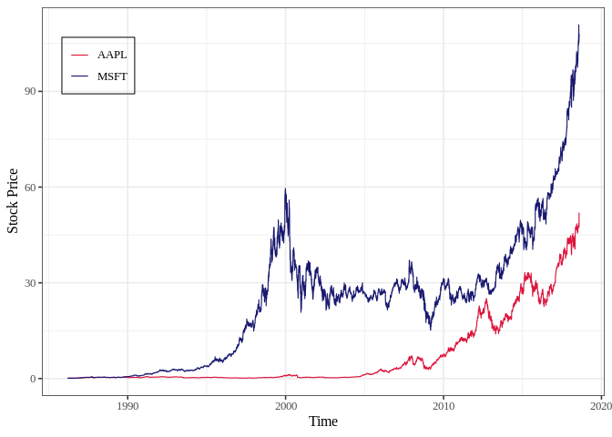
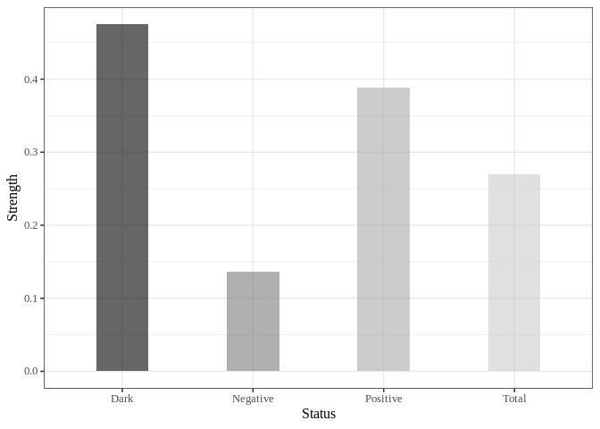

Overview
The goal of patterncausality is to measure the causality in the complex system. The core of this algorithm is measure the strength of each causality status like positive, negative, and dark in the view of complex system, this method could be used for many different fields like financial market, ecosystem, medical diagnosis and so on.
This algorithm has a lot of advantages.
- You can find the hidden pattern in the complex system.
- You can measure the causality in different fields.
- You can search for the best parameters for the complex system.
Installation
You can install the development version of patterncausality from GitHub with:
# install.packages("devtools")
devtools::install_github("skstavroglou/pattern_causality")You can also install the package from CRAN with:
install.packages("patterncausality")Example
Application in climate
We can import the existing data.
library(patterncausality)
#> Warning in fun(libname, pkgname): couldn't connect to display ":0"
data(climate)
head(climate)
#> Date AO AAO NAO PNA
#> 1 1979-01-01 -2.2328 0.2088 -1.38 -0.69
#> 2 1979-02-01 -0.6967 0.3563 -0.67 -1.82
#> 3 1979-03-01 -0.8141 0.8992 0.78 0.38
#> 4 1979-04-01 -1.1568 0.6776 -1.71 0.09
#> 5 1979-05-01 -0.2501 0.7237 -1.03 1.35
#> 6 1979-06-01 0.9332 1.7000 1.60 -1.64This dataset contains 4 time series of climate index, we could use the patterncausality in this dataset.
Then we need to determine the E and tao.
dataset <- climate[, -1] # remove the date column
parameter <- optimalParametersSearch(Emax = 5, tauMax = 5, metric = "euclidean", dataset = dataset)| Total | of which Positive | of which Negative | of which Dark | ||
|---|---|---|---|---|---|
| E = 2 | tau = 1 | 0.5543614 | 0.5519477 | 0.4474361 | 0.0006162144 |
| E = 2 | tau = 2 | 0.5727414 | 0.5736100 | 0.4232828 | 0.0031071596 |
| E = 2 | tau = 3 | 0.5711838 | 0.5469069 | 0.4513270 | 0.0017660870 |
| E = 3 | tau = 1 | 0.3305296 | 0.3457169 | 0.2470929 | 0.4071902523 |
| E = 3 | tau = 2 | 0.3500000 | 0.4037138 | 0.2547524 | 0.3415338782 |
| E = 3 | tau = 3 | 0.3570093 | 0.3657638 | 0.2690536 | 0.3651826225 |
Of course, we can also change the distance style to calculate the distance matrix.
After the parameters are confirmed, we could calculate the pattern causality.
X <- climate$AO
Y <- climate$AAO
pc <- PC.Mk.II.Lightweight(X, Y, E = 3, tau = 2, metric = "euclidean", h = 1, weighted = TRUE)
print(pc)
#> total positive negative dark
#> 1 0.2841121 0.326087 0.2318841 0.442029Then the percentage of each status will be showed below.
If we wonder the status in each time point, we can run the code.
X <- climate$AO
Y <- climate$AAO
detail <- PC.Mk.II.Full.Details(X, Y, E = 2, tau = 1, metric = "euclidean", h = 3, weighted = TRUE)
predict_status <- detail$spectrumOfCausalityPredicted
real_stattus <- detail$spectrumOfCausalityRealThen the status series will be saved in predict_status and real_status.
Application in financial market
First of all, we can import the data of AAPL and MSFT.
data(stock)
head(stock)
#> AAPL.Open AAPL.High AAPL.Low AAPL.Close AAPL.Volume AAPL.Adjusted
#> 1986-03-13 0.110491 0.111607 0.108817 0.110491 115964800 0.08527586
#> 1986-03-14 0.110491 0.117188 0.110491 0.116629 384854400 0.09001311
#> 1986-03-17 0.116071 0.116071 0.113281 0.116071 118720000 0.08958244
#> 1986-03-18 0.116071 0.121652 0.115513 0.119978 249356800 0.09259786
#> 1986-03-19 0.119978 0.121652 0.117746 0.118304 189884800 0.09130585
#> 1986-03-20 0.125000 0.132254 0.125000 0.126116 904131200 0.09733511
#> MSFT.Open MSFT.High MSFT.Low MSFT.Close MSFT.Volume MSFT.Adjusted
#> 1986-03-13 0.088542 0.101563 0.088542 0.097222 1031788800 0.06005456
#> 1986-03-14 0.097222 0.102431 0.097222 0.100694 308160000 0.06219922
#> 1986-03-17 0.100694 0.103299 0.100694 0.102431 133171200 0.06327216
#> 1986-03-18 0.102431 0.103299 0.098958 0.099826 67766400 0.06166304
#> 1986-03-19 0.099826 0.100694 0.097222 0.098090 47894400 0.06059071
#> 1986-03-20 0.098090 0.098090 0.094618 0.095486 58435200 0.05898221We can visualize this stock price.
#> Warning: A numeric `legend.position` argument in `theme()` was deprecated in ggplot2
#> 3.5.0.
#> ℹ Please use the `legend.position.inside` argument of `theme()` instead.
#> This warning is displayed once every 8 hours.
#> Call `lifecycle::last_lifecycle_warnings()` to see where this warning was
#> generated.
Then search the best parameters for the PC.
dataset <- stock
parameter <- optimalParametersSearch(Emax = 5, tauMax = 5, metric = "euclidean", dataset = dataset)After that, calculate the causality of each status.
X <- stock$AAPL.Close
Y <- stock$MSFT.Close
pc <- PC.Mk.II.Lightweight(X, Y, E = 3, tau = 2, metric = "euclidean", h = 1, weighted = TRUE)
print(pc)
#> total positive negative dark
#> 1 0.2698665 0.3881279 0.1369863 0.4748858Lastly we can also visualize this result.
library(ggplot2)
df = data.frame(
name=stringr::str_to_title(c(colnames(pc))),
val=as.vector(unlist(pc))
)
ggplot(df, aes(x=name, y=val, fill=name)) +
geom_bar(stat="identity", alpha=.6, width=.4) +
scale_fill_grey(start=0, end=0.8) + # start and end define the range of grays
labs(x='Status',y='Strength')+
theme_bw(base_size = 12, base_family = "Times New Roman") +
theme(legend.position="none", axis.text = element_text(size = rel(0.8)),
strip.text = element_text(size = rel(0.8)))
Conclusion
After calculating the causality, we can get the result here.
| Pairs | total | positive | negative | dark | Dataset |
|---|---|---|---|---|---|
| AAPL –> MSFT | 0.2698665 | 0.3881279 | 0.1369863 | 0.4748858 | stock |
| MSFT –> AAPL | 0.2759887 | 0.4075893 | 0.1388393 | 0.4535714 | stock |
| AO –> AAO | 0.2841121 | 0.326087 | 0.2318841 | 0.442029 | climate |
| AAO –> AO | 0.2803738 | 0.3602941 | 0.2647059 | 0.375 | climate |
| AO –> P | 0.3084112 | 0.1192053 | 0.4503311 | 0.4304636 | AUCO |
| P –> AO | 0.3308411 | 0.3374233 | 0.2515337 | 0.4110429 | AUCO |
References
Stavroglou, S. K., Pantelous, A. A., Stanley, H. E., & Zuev, K. M. (2019). Hidden interactions in financial markets. Proceedings of the National Academy of Sciences, 116(22), 10646-10651.
Stavroglou, S. K., Pantelous, A. A., Stanley, H. E., & Zuev, K. M. (2020). Unveiling causal interactions in complex systems. Proceedings of the National Academy of Sciences, 117(14), 7599-7605.
Stavroglou, S. K., Ayyub, B. M., Kallinterakis, V., Pantelous, A. A., & Stanley, H. E. (2021). A novel causal risk‐based decision‐making methodology: The case of coronavirus. Risk Analysis, 41(5), 814-830.